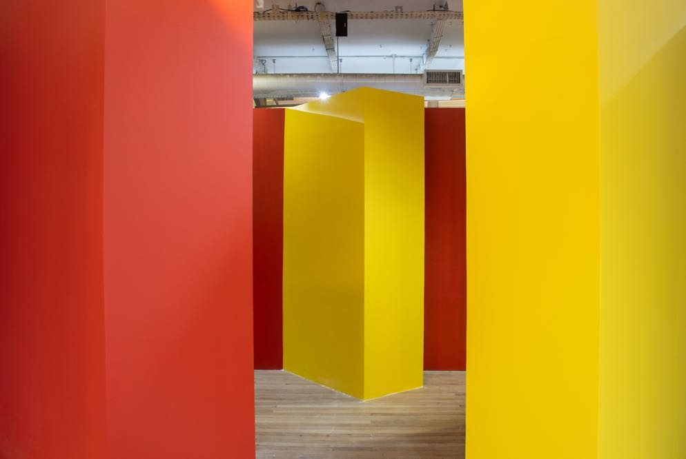
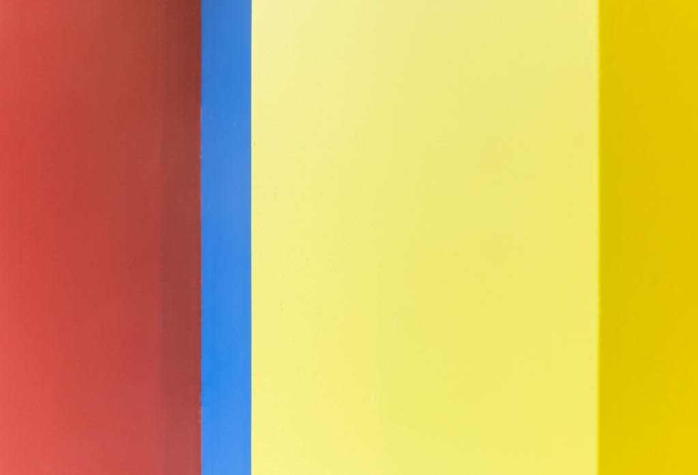

Esquina
Registro sonoro em preparação.
Instalação com paredes de madeira pintadas, sensores de presença e áudios de motores e trânsito, acionados pela passagem do público. Apresentada na exposição A Pele do Mundo, Futuros – Arte e Tecnologia, Rio de Janeiro, 2023.
- Materiais
- Madeira, tinta acrílica, áudios, sensores de presença
- Dimensões
- Dimensões variáveis
- Local
- Futuros – Arte e Tecnologia, Rio de Janeiro
- Exposição
- A Pele do Mundo (2023)



